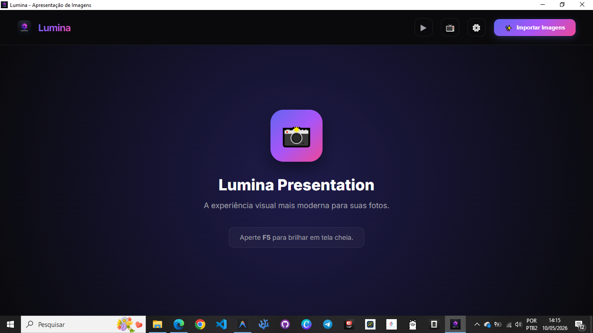

Sua visão,
amplificada.
Lumina Presentation redefine como você exibe suas memórias e trabalhos profissionais. Uma fusão perfeita entre performance técnica e estética minimalista baseada em Glassmorphism.

A Experiência Definitiva
Projetado para fotógrafos e apresentadores que não aceitam nada menos que a perfeição.
Modo Projeção Avançado
Controle mestre e projeção fluida. Gerencie sua galeria em um monitor enquanto seu público vê apenas a arte em tela cheia no projetor.
Atmosfera Sonora
Trilha sonora integrada para criar apresentações imersivas. Sincronize suas melhores capturas com a trilha perfeita.
Raio-X da Fotografia
Acesse metadados EXIF detalhados instantaneamente. Saiba exatamente qual abertura, ISO e câmera foram usados em cada pixel.
Filtros Criativos
Do clássico P&B ao exclusivo efeito "Mangá". Transforme o visual das suas fotos em tempo real com processamento de alta performance.
Controle Cinemático
Transições fluidas, ajuste de Safe Area e modos de preenchimento inteligente para garantir que sua imagem brilhe em qualquer proporção.
Sempre Atualizado
Ecossistema conectado ao GitHub para garantir que você tenha sempre as últimas inovações e melhorias de performance automaticamente.
Tecnologias Utilizadas
Construído com o que há de mais moderno no desenvolvimento desktop.
Electron
CSS3 Glassmorphism
JavaScript ES6+
Exifr
Pronto para brilhar?
Aperte F5 e transforme suas fotos em arte.